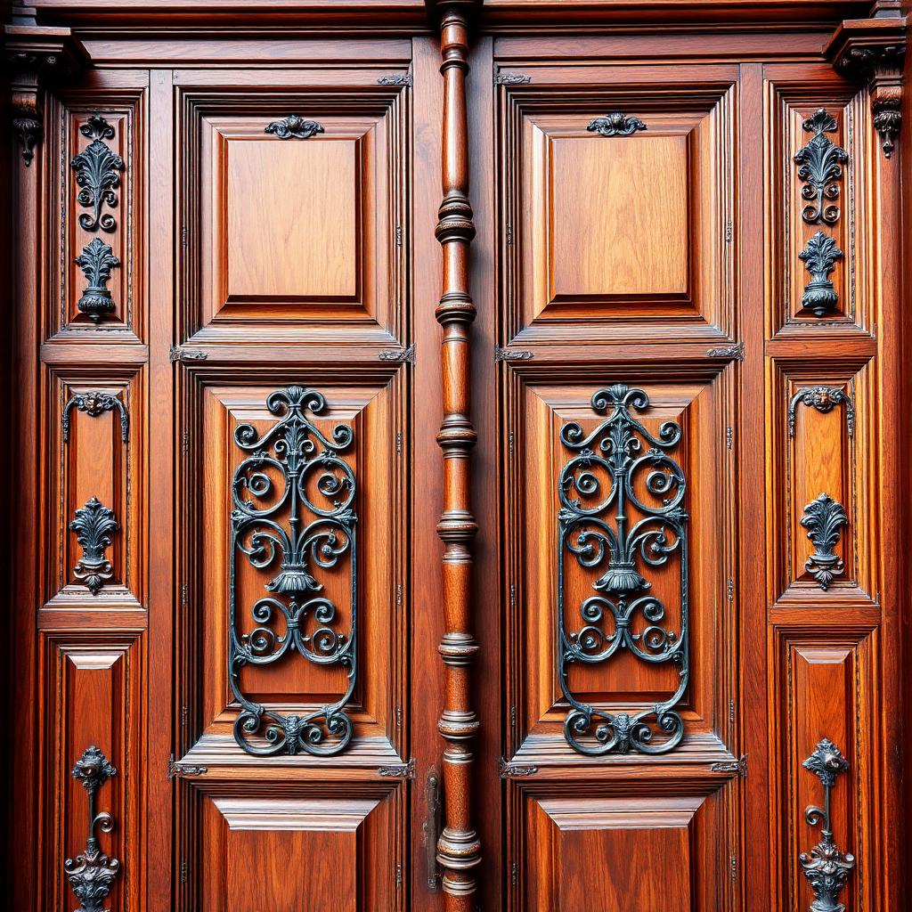

Exterior

Vista frontal
Fachada principal de piedra.
Frontal izquierda
Ángulo desde el atrio.
Frontal derecha
Vista en escorzo.

Lateral izquierda
Muros y contrafuertes.
Lateral derecha
Ventanas altas.

Vista trasera
Integración con el pueblo.
Interior

Interior frontal
Vista hacia el altar.

Altar principal
Retablo en pan de oro.
Lado izquierdo
Nave lateral.
Lado derecho
Candelabros e íconos.
Corredor central
Pasillo procesional.
Techo
Bóveda de cañón.

Vitrales
Luz tamizada de colores.
Coro
Balaustradas de madera.
Detalles
Cruz principal
Corona la fachada.
Campanario
Campanas centenarias.

Puerta principal
Madera y herrajes.
Ventanas
Vitrales ojivales.